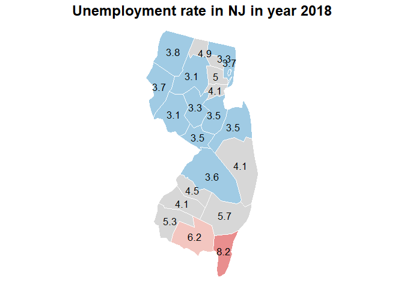
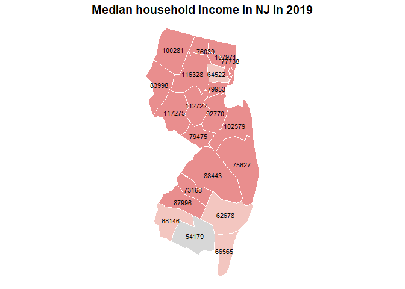

The goal of finalproject is to visualize unemployed rate and household income compare with time across United States.
You can install the development version of finalproject like so:
# install.packages("finalproject")This is a basic example which shows you how to solve a common problem:
library(finalproject)
## data cleaning
file=dataclean("https://www.ers.usda.gov/webdocs/DataFiles/48747/Unemployment.csv")
str(file)
#> 'data.frame': 290441 obs. of 7 variables:
#> $ FIPS_Code: int 0 0 0 0 0 0 0 0 0 0 ...
#> $ State : chr "US" "US" "US" "US" ...
#> $ Area_name: chr "United States" "United States" "United States" "United States" ...
#> $ state : chr NA NA NA NA ...
#> $ Attribute: chr "Civilian_labor_force_" "Employed_" "Unemployed_" "Unemployment_rate_" ...
#> $ year : num 2000 2000 2000 2000 2001 ...
#> $ Value : num 1.43e+08 1.37e+08 5.70e+06 3.99 1.44e+08 ...
# plot
## The unemployment rate in county level for a specific state and a year
plotunemployed(file, 2018, "NJ")
#> Warning in showSRID(uprojargs, format = "PROJ", multiline = "NO", prefer_proj =
#> prefer_proj): Discarded datum unknown in Proj4 definition
## 2019 median household income in county level for a specific state.
plotmedianhouseholdincome(file,"NJ")
## top 10 unemployed county histogram
stateunemployed(file,2011,"IA")You’ll still need to render README.Rmd regularly, to keep README.md up-to-date. devtools::build_readme() is handy for this. You could also use GitHub Actions to re-render README.Rmd every time you push. An example workflow can be found here: https://github.com/r-lib/actions/tree/v1/examples.
In that case, don’t forget to commit and push the resulting figure files, so they display on GitHub and CRAN.